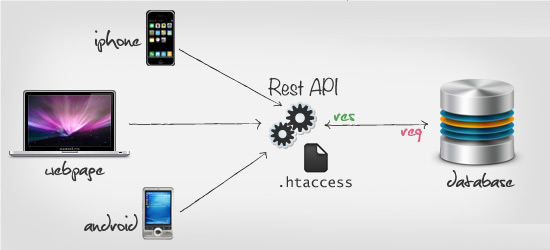

Tema 1: Introduccion a HTTP
APIs Web - Introducción
¿Qué es un API?

Hoy todo son APIs
Demo Time!
require 'twitter'
client = Twitter::REST::Client.new do |config|
config.consumer_key = ENV["CONSUMER_KEY"]
config.consumer_secret = ENV["CONSUMER_SECRET"]
config.access_token = ENV["ACCESS_TOKEN"]
config.access_token_secret = ENV["ACCESS_SECRET"]
end
#client.update( "I'm tweeting" )
puts client.followers( "sm477er" ).first.name
puts client.friends( "sm477er" ).first.name
Mas ejemplos
require 'rubypress'
wp = Rubypress::Client.new(
:host => "yourwordpresssite.com",
:username => "yourwordpressuser@wordpress.com",
:password => "yourwordpresspassword"
)
wp.getOptions()
=> {"software_name"=>{"desc"=>"Software Name",
"readonly"=>true,
"value"=>"WordPress"}}
wp.newPost( ... )
¿Que tienen que ver con REST?

¿Cómo se comunican con el servidor?
Hypertext Transfer Protocol (HTTP)
Peticion y Respuesta
GET /index.html HTTP/1.1
Host: www.example.com
|
HTTP/1.1 200 OK
Date: Mon, 23 May 2005 22:38:34 GMT
Server: Apache/1.3.3.7 (Unix) (Red-Hat/Linux)
Last-Modified: Wed, 08 Jan 2003 23:11:55 GMT
ETag: "3f80f-1b6-3e1cb03b"
Content-Type: text/html; charset=UTF-8
Content-Length: 131
<html>
<head>
<title>Example Page</title>
</head>
<body>
Hello World
</body>
</html>
|
Verbos
GET /index.html HTTP/1.1
Host: www.example.com
| GET | Recuperar información |
| POST | Crear contenidos (recursos) |
| DELETE | Eliminar información |
| PUT/PATCH | Actualizar información |
URN
GET /index.html HTTP/1.1
Host: www.example.com
Uniform
Resource
Name
Identificador unico de recurso
Protocolo
HTTP/1.1
Cabeceras
GET /tutorials/other/top-20-mysql-best-practices/ HTTP/1.1
Host: net.tutsplus.com
User-Agent: Mozilla/5.0 (Windows; U; Windows NT 6.1; en-US; rv:1.9.1.5) Gecko/20091102 Firefox/3.5.5 (.NET CLR 3.5.30729)
Accept: text/html,application/xhtml+xml,application/xml;q=0.9,*/*;q=0.8
Accept-Language: en-us,en;q=0.5
Accept-Encoding: gzip,deflate
Accept-Charset: ISO-8859-1,utf-8;q=0.7,*;q=0.7
Keep-Alive: 300
Connection: keep-alive
Cookie: PHPSESSID=r2t5uvjq435r4q7ib3vtdjq120
Pragma: no-cache
Cache-Control: no-cache
Cuerpo
GET /personajes/tyrion HTTP/1.1
Host: www.juego-de-tronos.com